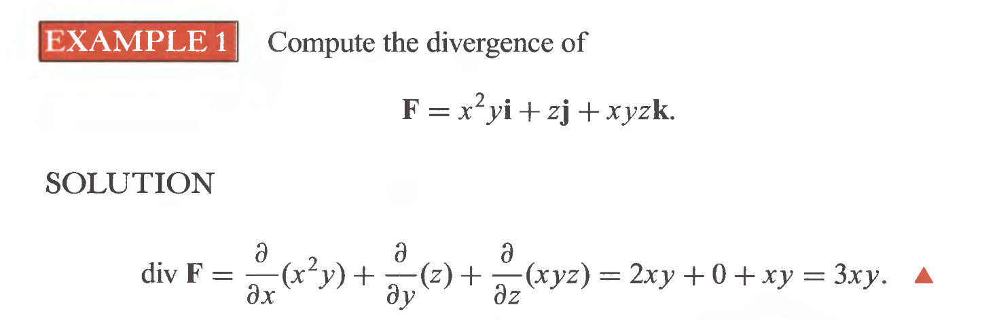
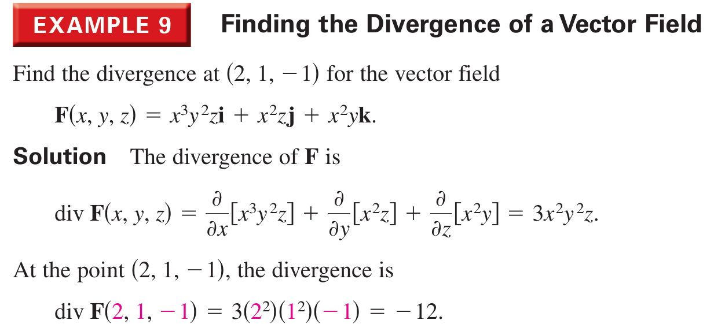

Calculo III

Divergência
Seja $\mathbf{F}:X\subseteq \mathbb{R}^3 \to \mathbb{R}^3$ um campo vetorial diferenciável. A divergência de $\mathbf{F}$, denotada por $div\,\mathbf{F}$ ou $\mathbf{\nabla}\cdot \mathbf{F}$ é o campo escalar definido por \[ div\,\mathbf{F}=\mathbf{\nabla}\cdot \mathbf{F}= \dfrac{\partial F_x}{\partial x} + \dfrac{\partial F_y}{\partial y} + \dfrac{\partial Fz}{\partial z} \nonumber \] onde $F_x, \, F_y\, F_z$ são as componente cartesianas de $\mathbf{F}$.
Exemplo
Se $\mathbf{F}= x^2y\,\mathbf{i} + xz \,\mathbf{j} +xyz \,\mathbf{k}$, calcule a divergência do campo.
SOL.
\[
\begin{align*}
\mathbf{\nabla}\cdot \mathbf{F} =& \dfrac{\partial x^2y}{\partial x} + \dfrac{\partial xz}{\partial y} + \dfrac{\partial xyz}{\partial z}\\
=& 2xy +xy\\
=& 3xy
\end{align*}
\]
Propriedades da divergência
Sejam \[\mathbf{f}(x,y,z) = f_1(x,y,z) \,\mathbf{i} +f_2(x,y,z) \,\mathbf{j} + f_3(x,y,z) \,\mathbf{k}\;\; e\\ \mathbf{g}(x,y,z) = g_1(x,y,z) \,\mathbf{i} +g_2(x,y,z) \,\mathbf{j} + g_3(x,y,z) \,\mathbf{k} \nonumber \] funções vetoriais definidas num domínio $D$. Suponhamos também que $div\,f$ e $div\,g$ existem, então:
- $\mathbf{\nabla}\cdot\left( \mathbf{f} \pm \mathbf{g} \right)= \mathbf{\nabla}\cdot\mathbf{f} \pm \mathbf{\nabla}\cdot\mathbf{g}$
- $\mathbf{\nabla}\cdot\left( h\mathbf{f} \right) = h\mathbf{\nabla}\cdot\mathbf{f}+\mathbf{f}\cdot \mathbf{\nabla} h$
Exemplos

